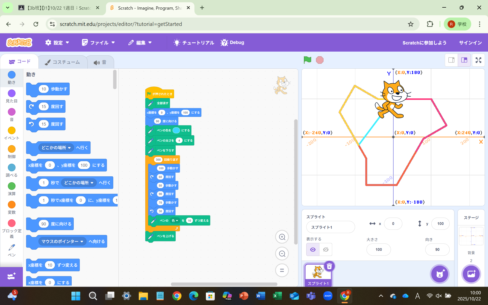
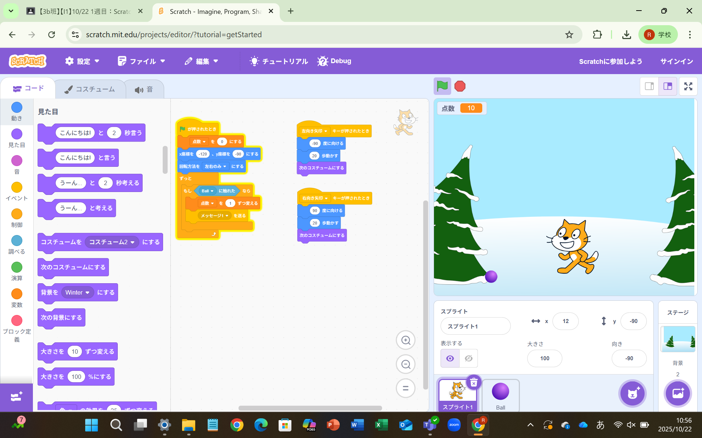

1週目のレポート ： 公大高専１年実習I-1
10班39番 keizou
第1週目
1-1 サイエンスアート

1.内容
sketch upを使ってサイエンスアートを作った。sketch upでいくつかの動きをループしてscratch内のアバターに
ペンで線を描きださせた。角度と動く歩数によって様々な幾何学的な模様が描ける。
2.感想
scratchを使ってみて、模様を描くことは簡単だったが、オリジナルな模様を描こうと思うと案外シンプルな形になって
しまってもう少し面白い模様を描きたかったなと思った。
1-2 ゲーム

1.内容
scratchを使って落ちてくるボールをキャッチするゲームを作った。キーボードの矢印キーで移動したり、乱数を使って
ランダムにボールが落ちてくる仕組みや、キャラクターがボールに触れるとボールが消えて回数カウントが１増えることを プログラムした。
2.感想
E1コースで似たような方式のプログラムを学んでいたのでそこまで難しくなかった。今回は横方向にしか移動できない仕様
だったが、ジャンプしたり、とってはいけないものを追加してみたいなと思った。
1-3 ホームページ作成
私のホームページ
1.内容
githubのアカウントを登録してホームぺージのテンプレートをダウンロードしてそれを編集して自分オリジナルのホームページ
作成した。自分の名前や趣味嗜好、レポートのページのリンクを貼ったりした。
2.感想
最初、ホームページの作成と聞くととても難しそうに聞こえたが、テンプレートを編集するだけで簡単で安心した。
このテンプレートの記号やアルファベットの意味を調べて自分で作れるようになりたいなと思った。
各ページへのリンク
1週目のレポート
2週目のレポート
3週目のレポート
私のホームページ